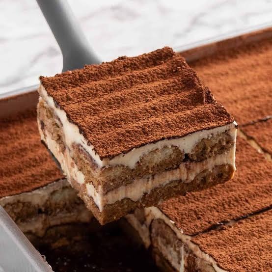

Tiramisu Recipe

Description:
Tiramisu is an Italian dessert made with coffee-soaked ladyfingers covered with a cream of egg yolks, sugar,
mascarpone, and cocoa powder. It originated in northeastern Italy, and modern versions were popularized in
restaurants from the late 1960s.
Ingredients
- Ladyfingers
- Mascarpone
- Coffee
- Heavy Whipped cream
- Granulated Sugar
- Vanilla extract
- Cocoa powder
Steps:
- Mix creamy filling. Beat the mascarpone, cream, sugar, and vanilla together until stiff peaks.
- Dip lady fingers. Add the espresso and liqueur (if using) to a shallow bowl and dip the lady fingers on both
sides (don’t let them soak–just a quick dip!)
- Layer mascarpone. Smooth a layer of the mascarpone/whipped cream mixture on top of the lady
fingers.
- Repeat. Add another layer of lady fingers (dipped in coffee and liqueur) and another layer of cheese
mixture. Dust with cocoa powder.
Homepage